EliteHax Tutorial
Welcome to EliteHax Tutorial!
In this tutorial you will find comprehensive information on how to play EliteHax and succesfully climb the leaderboard!
Registration and Login

The first time you open EliteHax, you will be presented with the Login screen where you can access with your credentials.
If this is the first time you play EliteHax, you must either login with your Google Play Game Services account or register by clicking on the "Register a New Account" button.

In this section you must specify:
- Username: between 4 and 18 characters, special characters allowed: .!_-
- Password: between 10 and 30 characters
- Confirm Password: the same password that you previously entered
- E-mail: a valid e-mail address for account verification and password resets
You must choose a Username that is not already in use by someone else and you can register only one account with your e-mail address
If you forgot your password, from the Login screen you can tap on the "Forgot Password?" button, where you will be prompted to input your Username and E-mail address you used during registration.

From here, you will receive an e-mail with instruction on how to reset your password with a one-time link.
Game Objectives and Currency
EliteHax is a hacking simulation game where you take up the role of a hacker.
The main goal is to gain Score and Reputation in order to climb the leaderboard and become the best hacker in the game.
You can gain Score and Reputation by upgrading your defensive and offensive arsenal (see Upgrades) and attacking other hackers to steal their money (see Attack Terminal).
Another important aspect of the game is joining Crews to socialize and cooperate with other hackers with common goals
There are two currencies in the game, $ (virtual Dollars) and ¢ (CryptoCoins).
You can use $ to upgrade your arsenal and become stronger. You can gain $ by attacking other hackers in different ways, implanting Bot Malwares and completing Missions.
You can choose to improve your offensive arsenal to attack stronger targets or upgrade your GPU and Mission Center to get better Missions, you have different ways to be successful on EliteHax!
The game doesn't involve any real hacking and it's just a simulation. The Dollars in the game is just a virtual currency valid only for this game.
Levels, XP and Skills
In EliteHax you can also level up and upgarde some skills. You can gain XP by completing missions, ranking in tournaments and completing achievements. You can gain new levels with XP and you unlock 1 Skill Point for every new level.
Home Screen
After logging in, you will be presented the Home Screen
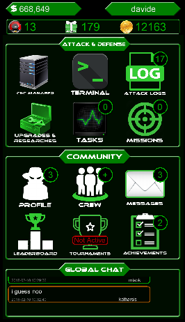On the top of the Home Screen you can see your current amount of Dollars on the left and your nickname on the right.

In the upmost section, you can see your items:
- Overclocks: items to speed up your tasks
- Packs: packs that can contains various items
- CryptoCoins: premium currency used to buy Packs, Overclocks and other items
You can click on any item to open the Items Screen

From the main section of the Home Screen you can access all the essential features of the game grouped by Attack & Defense features and Community features.
Attack & Defense

- C&C Manager: From this screen you can manage the communication with Bot and RAT Malwares that you implanted on other hackers and you can detect your infections;
- Attack Terminal: you can attack other hackers from here and steal their money!
- Attack Logs: in this screen you can see the latest attacks that you made or received and the amount of money and reputation gained or lost. The counter shows the number of new attack received;
- Upgrades & Researches: the most important section where you can upgrade your Defensive and Offensive arsenal and access the Research Center;
- Tasks: from this screen you can see the running tasks, cancel them or use overclocks. The counter shows the number of running tasks;
- Missions: tired of hacking other players? You can complete Missions from this screen to earn increasing rewards based on your Mission Center level. The counter shows the number of finished missions.
Community
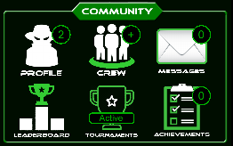- Player Profile: in the Player Profile you can see your basic information and access advanced Statistics, personal settings and the Skill Tree!
- Crew: search for a new Crew to join, create your own Crew or access the private section of your Crew! If you are not part of a crew, the counter shows the number of invitations, otherwise you will see a + if you have any new counter in the private section of your Crew.
- Messages: Use the private messages system to send private messages to other hackers. The counter shows the number of new messages and requests.
- Leaderboard: do you want to see your progress in game? Check the Player and Crew Leaderboards to see your Score, Reputation, Rank and Top 100 Hackers and Crews;
- Tournaments: In this screen you can view the active tournaments and related leaderboards;
- Achievements: goals to reach in EliteHax about upgrades, attacks and other activities to gain XP;
In the Home Screen you have also access to the Global Chat system, a public instant messaging visible to everyone

By clicking on any message in the preview, you will expand the Global Chat window where you can send messages to the community.
The message higlighted in RED are sent by Admin/Mods
Please don't abuse the chat and don't send IP Addresses of other hackers.

Use the X button on the top right or the hardware Back button to minimize the Global Chat and interact with other items in the Home Screen
You can tap on a player from the Global Chat to view its profile and main statistics
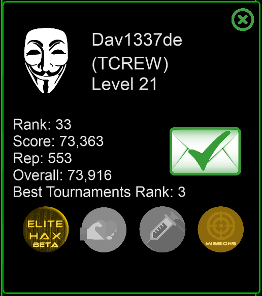If the player is not yet your contact, you can send a Contact request to the player with the message icon.
Upgrades & Tasks
Attacker Network
In the main upgrade screen you can see the different components of the Attacker Network and their level.
From here you can also access to the Research Center with the related button.
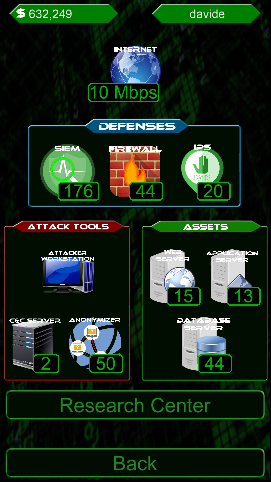You can click on any element to see a brief description, the current level, the level with enhanced by researches and the cost of the next upgrade.
If you have enough money, you can start the upgrade by clicking on the Upgrade button; To close the description popup click again on the same element.
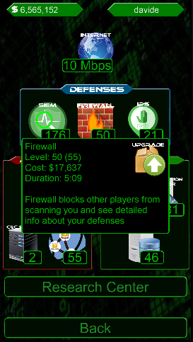Here is a description of the different components of the Attacker Network and their purpose in the game:
- Internet: reduce the time needed to upgrade the other components;
- SIEM: increase the chance of detecting the IP Address of other hackers when they attack you, increase the chance of detecting Bot and RAT Malware that other hackers can implant on your network and increase the log capacity (1 more log every 250 SIEM levels, up to 30);
- Firewall: blocks other hackers from scanning you and see detailed information about your defenses; if your firewall is higher than the attacker scanner, the attacker won't be able to see all the information regarding your network;
- IPS: the IPS (Intrusion Prevention System) is able to detect and block the exploit-based attacks to your assets. The attacker will need higher Exploit Framework levels in order to bypass your IPS;
- Attacker Workstation: this button will bring you to the Attacker Machine Upgrade Screen, see the description below;
- C&C Server: increase the number of Bot and RAT Malwares that you can manage. Upgrade this component to be able to infect more victims with your malwares;
- Anonymizer: increase the chance of not being detected by your victims when you attack them. If they cannot see your IP Address they won't know who attacked them!
- Web Server: the first and most exposed of your assets; upgrade your Web Server to block higher Exploit attacks;
- Application Server: the middle layer of your infrastrucutre; upgrade your Application Server to block higher Exploit attacks;
- Database Server: this is where your most precious information are stored; upgrade your Database Server to block higher Exploit attacks.
Attacker Workstation
In this screen you can see and upgrade the components of your attacker workstation to improve your arsenal and protect it.
The usage is the same of the previous screen

Here is a description of the different components of the Attacker Workstation and their purpose in the game:
- CPU: increase the task speed and reduce the time needed to upgrade the other components;
- RAM: increase the number of tasks that can run simultaneously;
- Encrypted Disk: increase the size of your encrypted storage that contains unhackable money; 1GB=1k unhackable money;
- GPU: increase the rewards that you obtain for completing missions;
- Cooling System: increase the duration of your Overclocks; +12m for each level;
- Antivirus: protect your Attacker Workstation from Malware attacks, the attacker will need an higher Malware SDK to compromise your workstation;
- Malware Framework: the framework that you use to create Malware; the higher the framework, the higher the chance of infecting your victims with malwares;
- Exploit Framework: the framework that you use to perform exploit-based attacks towards victim assets; the higher the framework, the higher the chance of succesfully exploiting other assets;
- Scanner: scan your victims before the attack to see their defense and money; you need an higher Scanner to scan higher firewalls;
Tasks
When you start the upgrade of one of your Attacker Network or Workstation components, this is not finished instantaneously.
The upgrade task is created and added to the running tasks. You can see your running tasks from the Tasks Screen (button from the Home Screen).

You can see the running tasks and the residual time to finish each task.
Overclock
You can also activate Overclocks to boost the speed of your tasks. You can use up to 15 Overclocks per day.
Tap on the overclock icon to activate your overclock. There are three Overclock types:
- Overclock: boost the speed of your tasks for a limited amount of time, based on your Cooling upgrade. If you already have an overclock active, the residual time will be extended.

When the overclock is active, all your tasks run at double speed!
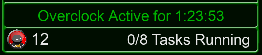 - Skip 1h: decrease by one hour the duration of all your running tasks;
- Finish Tasks: instantly finish all your running tasks, but it will consume 5 Overclocks!
If you started the wrong task, you can abort it by tapping on the specific task, then on the Abort button.

If you have multiple tasks of the same type, you can only abort the highest one.
You cannot abort tasks during Hack and Hack&Defend Tournaments.
Score
This is the amount of score that you can gain with each upgrade:
- Malware Framework and Exploit Framework: 5 points
- CPU, RAM, Hard Disk, Cooling System and C&C Server: 50 points*level
- All the others: 3 points
Researches
From the Research Center you can run researches to improve many different things. You can only run one research at a time.
Tap on any icon to read the description and tap on the Research button to start the research. To close the info panel, tap on the same icon again.
Each item has 100 levels and the time and cost are fixed. Be careful about research dependencies.
General Researches
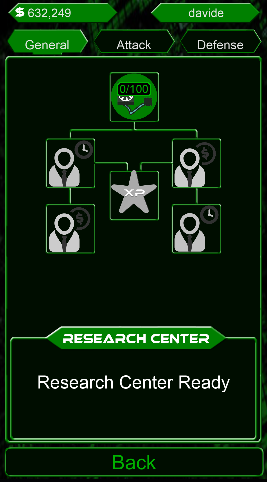- Liquid Cooling: increase the effect of your Cooling System. Effect: Overclock +30s Research Duration: 1h Cost: 1M
- Project Management: increases your Missions speed. Effect: Mission Duration -0,2% Research Duration: 1h Cost: 1M - Requires Liquid Cooling Level 10
- Negotiation Strategies: increases your Missions money rewards. Effect: Mission Money Reward +0,2% Research Duration: 1h Cost: 1M - Requires Project Management Level 50 and Negotiation Strategies Level 50
- Experiencer: increases Missions XP rewards. Effect: Mission XP +0,5% Research Duration: 3h Cost: 10M - Requires Liquid Cooling Level 10
- Sales Psychology: decreases all your upgrades costs. Effect: Upgrades Cost -0,2% Research Duration: 1h Cost: 1M - Requires Project Management Level 10
- Deployment Strategies: decreases all your upgrades duration. Effect: Upgrades Duration -0,2% Research Duration: 1h Cost: 1M - Requires Negotiation Strategies Level 10
Attack Researches
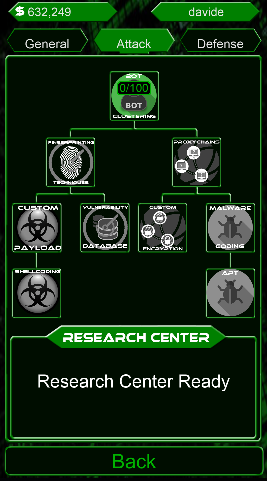- Bot Clustering: enhances the effect of your Bot Malware. Effect: Bot Income +0,2% Research Duration: 1h Cost: 1M
- Fingerprinting Techniques: increases the efficacy of your Scanner. Effect: Scanner +0,1% Research Duration: 1h Cost: 1M - Requires Bot Clustering Level 10
- Proxychains: enhances the efficacy of your Anonymizer. Effect: Anonymizer +0,1% Research Duration: 1h Cost: 1M - Requires Bot Clustering Level 10
- Vulnerability Scanner: greatly increases the efficacy of your Scanner. Effect: Scanner +0,2% Research Duration: 2h Cost: 10M - Requires Fingerprinting Techniques Level 100
- Custom Encryption: greatly improves the efficacy of your Anonymizer. Effect: Anonymizer +0,2% Research Duration: 2h Cost: 10M - Requires Proxychains Level 100
- Custom Payload: increases the efficacy of your Exploit Framework. Effect: Exploit Framework +0,1% Research Duration: 1h Cost: 1M - Requires Fingerprinting Techniques Level 10
- Malware Coding: improves your Malware Framework. Effect: Malware Framework +0,1% Research Duration: 1h Cost: 1M - Requires Custom Encryption Level 10
- Shellcoding: greatly enhances the effect of your Exploit Framework. Effect: Exploit Framework +0,2% Research Duration: 2h Cost: 10M - Requires Custom Payload Level 100
- APT: greatly enhances the efficacy of your Malware Framework. Effect: Malware Framework +0,2% Research Duration: 2h Cost: 10M - Requires Malware Coding Level 100
Defense Researches
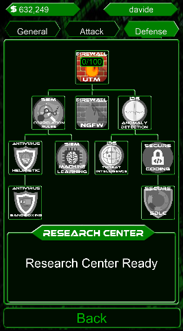- Unifed Threat Management (UTM): increases the effect of your firewall. Effect: Firewall +0,1% Research Duration: 1h Cost: 1M
- Correlation Rules: enhances the efficacy of your SIEM. Effect: SIEM +0,1% Research Duration: 1h Cost: 1M - Requires UTM Level 10
- Anomaly Detection: increases the effect of your IPS. Effect: IPS +0,1% Research Duration: 1h Cost: 1M - Requires UTM Level 10
- Next Generation Firewall (NGFW): greatly increases the effect of your firewall. Effect: Firewall +0,2% Research Duration: 2h Cost: 10M - Requires UTM Level 100
- Machine Learning: greatly enhances the efficacy of your SIEM. Effect: SIEM +0,2% Research Duration: 2h Cost: 10M - Requires Correlation Rules Level 100
- Heuristic: increases the effect of your Antivirus. Effect: Antivirus +0,1% Research Duration: 1h Cost: 1M - Requires Correlation Rules Level 10
- Threat Intelligence: greatly increases the efficacy of your IPS. Effect: IPS +0,2% Research Duration: 2h Cost: 10M - Requires Anomaly Detection Level 100
- Sandboxing: greatly increases the efficacy of your Antivirus. Effect: Antivirus +0,2% Research Duration: 2h Cost: 10M - Requires Heuristic Level 100
- Secure Coding: enhances the efficacy of your Web Server, Application Server and Database Server. Effect: Web/App/DB Server +0,1% Research Duration: 1h Cost: 1M - Requires Anomaly Detection Level 10
- Secure Software Development Lifecycle: greatly increases the efficacy of your Web/App/DB Server. Effect: Web/App/DB Server +0,2% Research Duration: 2h Cost: 10M - Requires Secure Coding Level 100
Attack Terminal
From the Attack Terminal you can scan your victims and attack them with different methods.
The are different phases involved into an attack lifecycle: Reconnaissance, Scanning, Exploiting, Maintaining Persistence with Malwares, Covering Tracks.
Reconnaissance
The first phase, Reconnaissance, has the purpose of identifying the ideal target without engaging it.
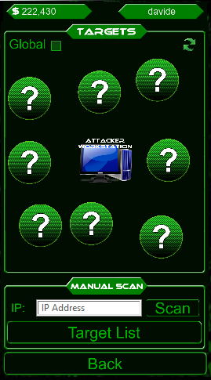In this phase you can choose your target based on its Firewall level and you can search for targets with a score similar to yours or with any score.
Drag your finger from the Attacker Workstation to the hidden targets to see the firewall level of other hackers that have a similar score.
The details of the targets that you already attacked are shown in red.

If you want to see other targets, just click on the Refresh button  on the top right
on the top right
Alternatively, you can check the Global setting  on the top left and search for any player, not only those with a similar score.
on the top left and search for any player, not only those with a similar score.
Scanning
When you find a good target, you can release the finger on its firewall to start the scan and see the stats of your victim.
If you already know the IP Address of your victim, maybe because you received an attack and found the IP Address in the Attack Logs, you can insert the IP Address in the Manual Search input field and hit the Manual Search button. 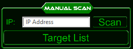
You can also save frequently attacked targets in your Target List. Click the Target List button to open it.
From the Target List, next to each target, you have three buttons to Edit the target details (Name and Comment), remove the target from the list or directly scan the target.
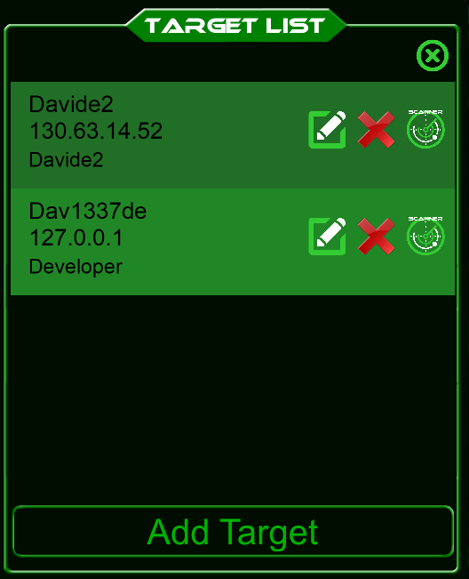
You can add up to 10 targets to the list by clicking on the Add Target button
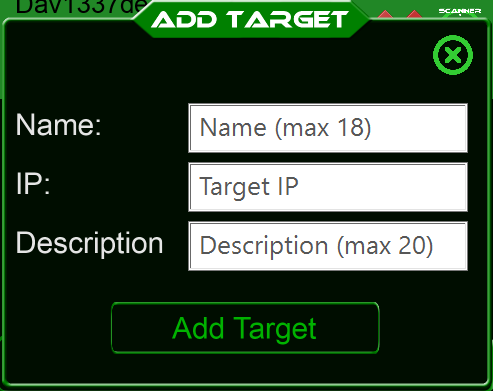
Insert the Name of the Target, it's IP Address and optionally a comment such as its Crew or why you hack him (money, reputation, etc.).
When the scan is complete, you can see the details of your victim based on your Scanner level and its Firewall level and the scanned firewall is marked with a darker green.

If you see a '?' instead of the stat, it means that your scanner is not higher enough to discover that information.
The victim is not aware that you are scanning him.
Exploiting
If you feel confident and you want to attack your victim, after scanning him you can tap on one of the Exploit options (on the left of the target firewall).
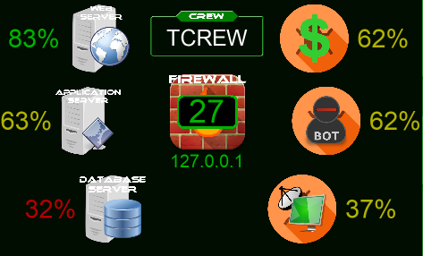When trying to exploit a vulnerability in your victim assets, you can choose three different attack types:
- Web Server: try to exploit a vulnerability in the victim Web Server. The difficult is based on your Exploit Framework and the combination of your victim IPS and Web Server patch level. This attack is the most simple and the reward is 30% of the victim money;
- Application Server: try to exploit a vulnerability in the victim Application Server. The difficult is based on your Exploit Framework and the combination of your victim IPS and Application Server patch level. This attack has a medium difficult and the reward is 40% of the victim money;
- Database Server: try to exploit a vulnerability in the victim Database Server. The difficult is based on your Exploit Framework and the combination of your victim IPS and Database Server patch level. This attack is the most difficult, but the reward is 50% of the victim money!
Based on your scanner ability, you can see the successfull percentage of each attack type and you can choose how to attack your victim.
You have the choice to attack with an high successfull chance but low reward or a low successfull chance with an high reward, choose your strategy!
When you decide how to attack that victim, just tap on the attack type of your choice.
You will see the result of the attack, how much money and reputation you gained or lost and whether your attack was anonymous or not.

Please note that you cannot attack the same target for an hour, even if the attack was unsuccessfull.
Maintaining Persistence with Malwares
In addition to exploiting systems, you can also use Malwares to attack the victim workstation instead of their assets.
You can choose between three different malware attack types, one for an instant reward and other two for persistence on the victim workstation
- Money Malware: this type of malware immediately steals 45% money from the victim workstation, but without keeping persitence. The difficult is based on your Malware Framework and your victim Antivirus;
- Bot Malware: this type of malware is implanted on the victim machine and is persistent. This malware uses the victim workstation for different purpose and generate an hourly income based on your victim GPU. The difficult is based on your Malware Framework and your victim Antivirus, but the victim SIEM can detect the malware after some time
- RAT Malware: this type of malware is the most dangerous; after implanting it, you can see the status of your victim in realtime and attack it directly from the C&C Manager. In this way, you can monitor your victim and attack it at the right moment (when they have more money!). The difficult is based on your Malware Framework and your victim Antivirus, but the victim SIEM can detect the malware after some time
When you decide how to attack that victim, just tap on the attack type of your choice (on the right of the target firewall). You will see the result of the attack and how much money and reputation you gained or lost.
Please note that you cannot attack the same target with a Money Malware for an hour, even if the attack was unsuccessfull.
You can try to implant Bot and RAT Malwares on your victim for a maximum of three times per hour.
Covering Tracks
The last phase of the attack involves covering your tracks to avoid the detection by your victim.
This phase is done automatically for you by the use of a combination of proxies and TOR network that allows you to be anonymous.
The chance of being anonymous is based on your Anonymizer level and the victim Firewall.
C&C Manager
In the C&C Manager screen you can manage the Bot and RAT Malwares that you implanted on your victims.
By implanting Bot Malwares you gain an hourly income based on your victim GPU.
You receive half of the amount every half an hour.
You can see the amount of money provided by each bot from this screen.

You can implant a limited number of Bot Malwares based on your C&C Server level.
If you want to remove one of the Bot implanted, you can click on it and tap the Remove button
If the malware implanted is higher than the victim Antivirus, the victim cannot see the infection, although his SIEM can detect the infection after some time.
By clicking on the RAT tab, you can se the RAT Malwares that you implanted on your victims.
A RAT Malware provides you direct access to the victim information. You can see how much money the victim has and the waiting time before the next attack.
You can sort your RATs by Name, Money, Attack and Age
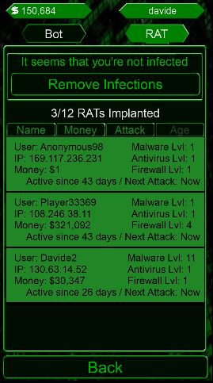By clicking on one of your victims, you open a quick attack popup where you can directly attack your victim without going to the terminal, copy his IP Address or remove the RAT Malware

If you are infected by someone else Bot or RAT Malware and your Antivirus or SIEM can detect the infection, you can remove it by clicking on the Remove Infections button

Missions
Another way to earn money is doing Missions! You receive missions based on your Mission Center level and GPU; the higher the level, the better the rewards!
At the beginning of the game it's important to upgrade your GPU to increase missions rewards and earn money easily.
With missions you also gain XP to level up and unlock new skills!
You can sort your missions by Money, Time, XP and Status
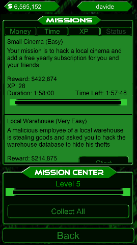To start a mission, just click on the start button next to the mission that you want to start.
The number of missions that you can run simultaneously depends on your Mission Center level.
Each mission has a duration and a reward that you can collect when the mission is finished.

When the mission is finished you can click on Collect button to retrieve your reward.

When you finish every mission and collect all rewards, come back to the Mission Screen in order to receive new missions
If you have spare money and you don't know how to spend them, a very good investment is to upgrade your Mission Center.
It requires 100 Mission Center upgrades to reach a new Mission Center level, but with every new level you will get better missions with higher rewards and you will be able to run more missions at the same time
When you reach Mission Center Level 5, you unlock the Collect All button in the Mission Center, that allows you to collect the rewards from all the finished missions at once.
Hacking Missions (Beta)
In the Hacking Missions you have to reach an objective by hacking a complex network with multiple hosts.
Each scenario is randomly generated with one of the 25+ objectives, up to 12 hosts in 4 different networks, each one with a unique combination of services and vulnerabilities.
Hack the network by scanning and exploiting vulnerabilities, using social engineering or bruteforce, escalating privileges and pivoting into the networks until you find your target!
In the Hacking Missions overview you can see your mission objective that explain what is your final target and the action that you must perform on the target.
You have 48 hours to complete a mission and win 100 reputation points.
Hacking Map
When you first enter an hacking mission, you just have access to your attacker workstation and you just see the DMZ network of the target organization.

Drag and drop from the attacker workstation to a network area to interact with that network:
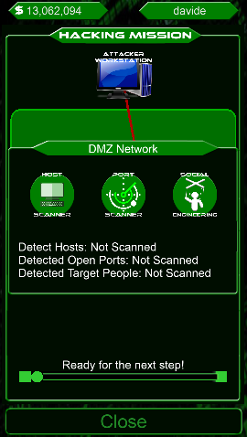When you interact with a network, you have three available options:
- Host Scanner: discover the hosts on that network - Duration: 5 minutes
- Port Scanner: discover the hosts on that network and all the remote service ports of each host - Duration: 20 minutes
- Social Engineering: try to discover users using social networks and send them an e-mail with a malware or a malicious URL to infect their system - Duration: 60 minutes - Reward: +10 Reputation
After choosing the best option, you can see the timer at the bottom of the Hacking Network Map
When the actions are completed, you will see the newly discovered hosts:
Host/Network Details
Drag and drop from the attacker workstation to an host to interact with it:
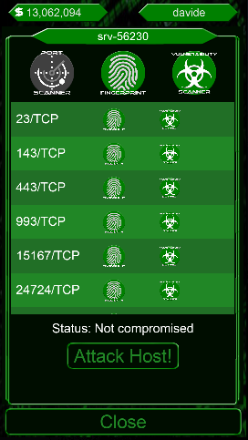You can see the hostname, that is important to find the right target for the mission, and you have three main options:
- Port Scanner: discover all the remote service ports of this host - Duration: 10 minutes
- Fingerprint: discover all the remote service ports of this host and their service name - Duration: 20 minutes
- Vulnerability Scanner: discover all the remote service ports of this host, their service name and the vulnerabilities of each service - Duration: 30 minutes
In addition to the three main options, you can also act on a specific service port after it has been discovered:
- Fingerprint: discover the service name of the specific service port - Duration: 2 minutes
- Vulnerability Scanner: discover the service name and the vulnerabilities of the specific service port - Duration: 5 minutes (3 minutes if fingerprint has been performed)
Tap on the 'Attack Host!' button to try to compromise the host.
In this section you have five tabs:
- Reconnaissance: General information about the host and discovered users;
- Scanning: Services and Vulnerabilities;
- Exploitation: Exploit the vulnerabilities or try to bruteforce username and passwords;
- Post-Exploitation: Privilege Escalation and additional actions to discover new users and networks;
- Actions: the final actions on the hosts.
Reconnaissance
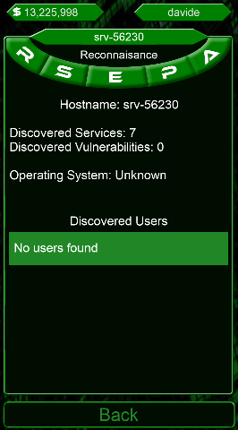General information and statistics about the host.
If you have succesfully used social engineering and/or you have discovered users on infected hosts that can login to this machine, you will see them listed here.
Scanning
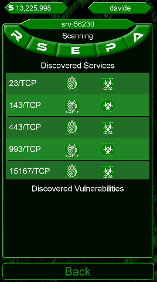From the Scanning tab, you can view the discovered information about service ports, service name and vulnerabilities of this host.
You can also perform two actions on the discovered service ports:
- Fingerprint: discover the service name of the specific service port - Duration: 2 minutes
- Vulnerability Scanner: discover the service name and the vulnerabilities of the specific service port - Duration: 5 minutes (3 minutes if fingerprint has been performed)
After completing the vulnerability scan, you can see all the details and tap on a service to see the related vulnerabilities:

Exploitation


In the Exploitation tab you can view the discovered vulnerabilities and try to exploit them.
Based on the vulnerability type, you have three options:
- Exploit Vulnerability: the most common option to exploit vulnerabilities - Duration: 10 minutes - Reward: +10 Reputation
- Bruteforce Username and Password: useful on login services when you don't have any information about users - Duration: 15 minutes - Reward: +10 Reputation
- Bruteforce Password: userful on login services when you have already discovered at least one user - Duration: 10 minutes - Reward: +10 Reputation
Be careful while choosing the vulnerability to exploit, not all the vulnerabilities can be succesfully exploited and some vulnerabilities will sometimes crash the target host and make it unavailable.
With the experience you will learn to recognize the 'safe' vulnerabilities and those that can result in a system crash.
Post-Exploitation
After you have succesfully exploited a vulnerability, you can move to the Post-Exploitation tab
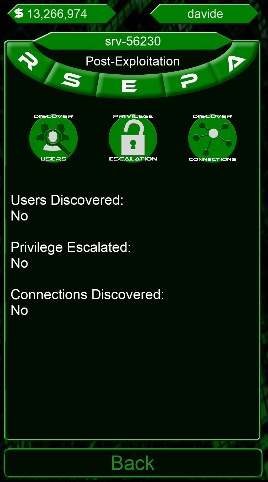Here you have three available options:
- Discover Users: discover users on this host, sometimes they can be used on other hosts - Duration: 10 minutes
- Privilege Escalation: sometimes it is necessary to gain root privileges to perform additional actions - Duration: 10 minutes
- Discover Connections: discover additional networks connected to this host. Very helpful to advance inside the organization - Duration: 10 minutes
Actions
After compromising a system, you can perform different actions on the host:
- Install Proxy: necessary to use the host as a starting point to infect other hosts inside the organization - Duration: 30 minutes - Reward: +10 Reputation
- Exfiltrate Secret Data: if the host contains any secret data, you can exfiltrate it - Duration: 60 minutes - Reward: +5 Reputation
- Dump Database: if the host contains a database, you can dump it all - Duration: 60 minutes - Reward: +5 Reputation
- Tamper Data: if the host contains any unstructured data or database, you can edit and tamper it - Duration: 60 minutes - Reward: +5 Reputation
- Shutdown System: you should do it only if it is your mission objective, otherwise you won't be able to access this host anymore! - Duration: 60 minutes - Reward: +5 Reputation
- Install Ransomware: install a ransomware on the host - Duration: 60 minutes - Reward: +5 Reputation
If you complete the right action on the target host of your mission objective, you will earn +100 Reputation.
On some hosts you must perform privilege escalation before performing any action.
Exploiting the organization and complete the mission objective
After exploiting a host in the DMZ Network, you would need to discover additional connections (from Post-Exploitation) and install a proxy (from Actions) in order to move forward.
After a proxy has been installed, you will be able to drag and drop from that host to other hosts and internal networks

By using a combination of the previously explained steps, you will be able to succesfully exploit hosts and use them to pivot into the organization.
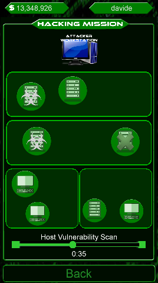Remember that the final goal is to complete your mission objective, you will have to find the right host and complete the right action on it to earn 100 Reputation!
Attack Logs
In the Attack Logs you can find information on your attacks and the attacks that you received.
For each attack you can see when it happened, the status, that is also highlighted by the corresponding color, the attacker ip (if visible), the target, the amount of money stolen and the reputation gained or lost.
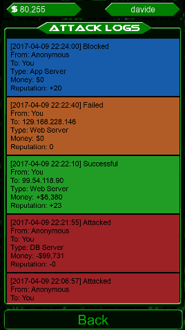You have four different types of logs:
- Successful: An attack that you successfully completed, highlighted in green;
- Failed: An attack that you failed on a target, highlighted in orange;
- Blocked: An attack attempted to you but blocked, highlighted in blue;
- Attacked: An attack successfully occurred to you, highlighted in red.
If you received an attack and you can see the Attacker IP Address, based on your Firewall and SIEM and the attacker Anonymizer, you can click on the log entry to copy the IP Address and use it in the Attack Terminal to get your revenge!
Player Profile
From the player profile your information and statistics.
In the Player Profile Screen you can see your IP Address, your score and reputation, you rank and your crew.
You can also see your player level, your XP and the amount required for the next level. You can gain XP by completing missions.

From the screen you can access your account Settings, the Advanced Statistics and the Skill Tree.
Advanced Statistics
In the Advanced Statistics Screen you can see statistics about the attacks made and received, money and stolen and lost, reputation earned and lost and how much you spent on upgrades.
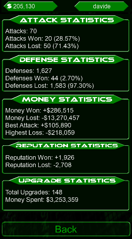Player Settings
In the Settings screen you can set, change and reset some of the in-game settings!
In order to change some of the settings you need to buy an item with Cryptocoins from the Items screen.

The available options are:
- Change Name: allows you to change your nickname (Not yet implemented);
- IP Change: allows you to change the in-game IP Address; you must buy the IP Change item from the Item screen;
- Reset Skill Tree: allows you to reset your current Skill Tree setup and distribute your Skill Points in a different way; you must buy the IP Change item from the Item screen;
- Change Profile Picture: allows you to change your profile picture shown in the Player Profile and visible to other players;
- Change Skin: allows you to change the game skin! Choose between the different available colors!
- Sounds and Notifications: enable and disable tournament and task notifications, background music and sound effects;
- Tutorial: allows you to view this tutorial in-game.
Skill Tree
From the Skill Tree you can spend your Skill Points to increase different skills.
You earn 1 Skill Points for each new player level.

The available skills are:
- Investor: enhances your investments and increases your hourly income; 1 Skill Point = +20k Hourly Income, +5% Hourly Income;
- Vulnerability Researcher: enhances your exploits raising your chance of successfully attacking targets; 1 Skill Point = +1% Success Chance with Exploit Attacks;
- Great Developer: enhances the protection of your assets raising your chance of successfully defend against exploits; 1 Skill Point = +1% Defending Chance from Exploit Attacks;
- Stealth: enhances your chance of being anonymous while attacking targets; 1 Skill Point = +2% Anonymous chance;
- Missions' Negotiator: enhances the reward that you get from missions; 1 Skill Point = +2% Mission Rewards;
- Missions' Enthusiast: reduces the time needed to complete missions; 1 Skill Point = +2% Mission Speed;
- SOC Analyst: enhances your ability to detect the attackers IP addresses; 1 Skill Point = +2% Detection Chance;
- Money Chaser: increases the money that you steal by successfully attacking targets; 1 Skill Point = +2% Money Stolen;
- Upgrades' Negotiator: decreases the cost of your upgrades; 1 Skill Point = -2% Upgrade Cost;
- Upgrades' Expeditor: decreases the time needed for your upgrades; 1 Skill Point = +2% Upgrade Speed;
- Money Hider: decreases the money that attackers can steal from you; 1 Skill Point = -2% Money stolen when receiving attacks;
- Penetration Tester (requires Vulnerability Researcher 5/5): greatly enhances your exploits raising your chance of successfully attacking targets; 1 Skill Point = +2% Success Chance with Exploit Attacks;
- Risk Manager (requires Great Developer 5/5): greatly enhances the protection of your assets raising your chance of successfully defend against exploits: 1 Skill Point = +2% Defending Chance from Exploit Attacks;
Tap on a skill to see its description and, if you have enough skill points, tap on the '+1 SKILL' button to upgrade that skill spending 1 Skill Point.
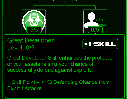Crew
The game is more fun if you are part of a Crew!
Being part of a Crew lets you cooperate with other hackers, having a private chat with them, a Crew Wallet wiht money to use to improve your crew or buy gifts for members and many other things!
The only downside is that part of the money that you steal during each attack will go into the Crew Wallet instead of your pockets.
The percentage of the money that goes into the crew wallet can be set by some members and could be between 2% and 10%. There is a cap of 5M daily for each member and you don't fill the Crew Wallet when attacking other members of your Crew.
You can request to join an existing crew or create your own crew, although that's quite expensive at the beginning.
Join a Crew
From the Home Screen, tap on Crew to reach the New Crew Screen.
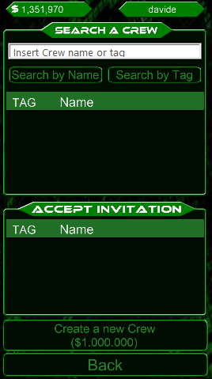You can search an existing crew based on Crew Name or Crew Tag, just insert the text and tap the appropriate button and you will see all the matching crews.
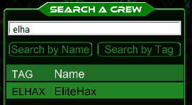If you tap on a crew name or tag, you will see the Crew Description and some details.
When you find the right crew you can tap the Send Request button to send a request to join

If the crew members decide to accept your request, the next time you tap the Crew button from the Home Screen you will be in your new Crew!
Crew Invitation
Crews can invite players to join them. If someone has invited you, you can see the invitation in the Accept Invitation list

Tap on an invitation to see the crew details and choose to Accept it or Reject it.
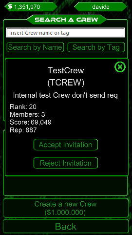Create a new Crew
If you want to create your own Crew and you have enough money, you can click on the Create a new Crew button.
You will see a popup where you can specify the Crew Name, Crew Tag and Crew Description.
If the name and tag are available (not yet in use by other crews), you can confirm the crew creation with a tap on the Create Crew button.
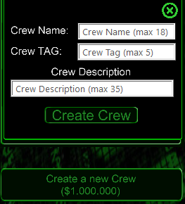Please note that Crew Name and Crew Tag cannot be changed after the creation, but you can change the Crew Description anytime.
Existing Crew
If you are already a member of a Crew, when you tap the Crew button from the Home Screen you will be presented your Crew Screen

From the Crew Screen you can see many information including score and ranks, the Crew Wallet amount, tournament stats and daily wallet cap.
You also have a private Crew Chat that can be seen only by Crew Members. The usage of the Crew Chat is similar to the Global Chat.
Based on your role in the Crew, you have access to different features:
- Settings: change some crew settings and buy gifts for members;
- Members: see and manage crew members and roles;
- Requests: accept/reject requests and invite new members;
- Crew Logs: tournament rewards, action on members and requests, change in crew settings and crew items bought;
- Crew Chat: private Crew chat that can be seen only by Crew Members; The usage of the Crew Chat is similar to Global Chat;
- Leave Crew: leave the current crew;
- Defend Datacenter: defend your crew datacenter from other crews attacks;
- Datacenter: upgrade your datacenter to improve your crew attack and defense capabilities;
- Crew Wars: attack other crew datacenters to steal from their crew wallet and earn cryptocoins rewards.
Crew Members and Roles
In the Crew Members screen you can see the members of the Crew, their score, their role and activity information.
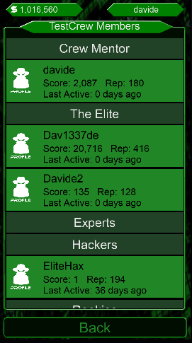Members are grouped by Role; the available roles are:
- Rookies: new hackers that recently joined the Crew, they can use the chat and view the member list;
- Hackers: rookies that have been promoted; Hackers can see if there are new Requests to join the crew, but cannot accept new members;
- Experts: expert hackers that proved to be loyal to the Crew and have been promoted; in addition, Experts can view Requests and Accept new members and can also promote Rookies and demote Hackers;
- The Elite: historic crew members that deserves an higher role due to their contribution; in addition, The Elite can also change the Crew Description, kick members, promote and demote Experts and change the Crew Wallet percentage;
- Crew Mentor: the creator and mentor of the Crew! In addition, The Crew Mentor can promote and demote The Elite, assign his role to another member and delete the entire Crew, but why would you do that?!
Based on your Role, you can tap on other members name and perform the Promote, Demote and Kick action with a tap on the appropriate button:

You can also tap on the Profile icon to view their profile.
Crew Requests
If you have an Hackers or higher role, you can view the requests to join your crew.
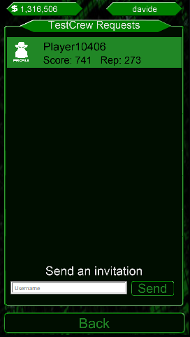If you have an Experts or higher role, you can tap on a player name to see a popup where you can choose to Accept or Reject the request.
If you accept the request, the player will now be part of your crew with a Rookies role.

You can also tap on the Profile icon to view the player profile before accepting or rejecting the request.
If you have an Experts or higher role, you can also send an Invitation to any player that is not a member of any Crew.
Crew Settings
In the Crew Settings Screen, if you are part of The Elite or you are the Crew Mentor, you can modify various settings.
- Crew Description: you can change the Crew Description visible when new players request to join your crew and from the crew leaderboard if you are in Top100;
- Crew Wallet %: the % of stolen money that goes into the Crew Wallet instead of each member pockets during each attack; can be set between 2% and 10%; Remember that there is a cap of 5M/daily per member;
- Change Crew Mentor: if the Crew Mentor wants to give his role to someone else, they can choose who will be his successor;
- Crew Shop: the shop allows Crew Mentor and The Elite to buy improvements for the crew and gifts for the members using the Crew Wallet!
- Delete Crew: the Crew Mentor can Delete the entire Crew. The action is irreversible, all the members will be kicked and the crew will no longer exists.
Crew Shop
In the Crew Shop Screen, if you are part of The Elite or you are the Crew Mentor, you can buy improvements for your Crew, like new crew slots, or gifts for your members.
In the Crew Shop you can buy:
- New Slot: add new slots to your crew, up to 25!
- Small/Medium/Large Packs: packs for all the crew members! The cost depends on the number of crew members.
- Small/Medium/Large Money Packs: money packs for all the crew members! The cost depends on the number of crew members.
- Small/Medium/Large Overclock Packs: overclock packs for all the crew members! The cost depends on the number of crew members.

Use the slider to select the amount of items to buy and tap the Buy button.
Crew Logs
In the Crew Logs screen you can see events related to your Crew, Crew Tournament Rewards and Crew Wars logs.
There are three tabs available:
- Events: Promote/Demote/Kick, Rquest/Join/Leave, Invitation Sent/Accepted/Rejected, Description/Mentor/Wallet % Changed, Item Bought;
- Tournaments: Tournament Rewards gained by your Crew during Score Tournaments and Hack Tournaments;
- Crew Wars: latest attacks done and received by your Crew. (Blue=You are attacking, Green=Enemy Mainframe Exploited, Orange=You are being attacked, Red=Your Mainframe Exploited). Crew Mentor and The Elite can also see the details of how the latest 100 Crew Points were spent (Yellow=Attack, Aqua=Defend Purple=Upgrade).
Crew Wars
The Crew Wars is one of the most advanced feature that allows your crew to build and defend your datacenter and to scan and attack other crews datacenters.
By succesfully exploiting an enemy crew production mainframe, you can steal 20% of their Crew Wallet and earn cryptocoins rewards for all your crew members based on the attack difficult.
Crew Wars are based on the main area:
- Datacenter: upgrade your crew datacenter;
- Defend Datacenter: detect incoming attacks on your crew datacenter;
- Crew Wars: scan the world regions to find and attack other crew datacenters.
Every crew member except for Rookies can access these three areas. Every member can use 2 points per hour and in total your crew can use up to 50 daily points.
Your points and Crew points are shared between Upgrade, Defend and Attack, so you have to choose carefully your actions and cooperate with other crew members!
Datacenter
In the datacenter screen you can see your crew datacenter and upgrade its offensive and defensive arsenal.
Only Experts members or higher can upgrade the Datacenter.

Your datacenter includes a Production and a Test Mainframe. Only the Prod Mainframe contains your Crew Wallet, but the attacker won't know which one is the right one!
If you think that too many enemy crews have discovered your production mainframe, you can swap the two environments by reaching 50/50 on the Test label.
Here is a brief description of each item:
- External Firewall: this is your first line of defense and the first item that an attacker must bypass, but also the easiest one;
- IPS: after bypassing the External Firewall, the attacker must evade your IPS that is a bit more difficult to attack;
- SIEM: it increases your chance of detecting incoming attacks to give you a chance to defend your datacenter;
- Internal Firewalls: you have two Internal Firewall to protect your Production and Test environments. The Internal Firewalls are more difficult to bypass;
- Mainframe: where your crew wallet is stored. Exploit the mainframe is the most difficult step of the attack!
- Your datacenter includes a Production and a Test Mainframe. Only the Prod Mainframe contains your Crew Wallet, but the attacker won't know which one is the right one!\nIf you think that too many enemy crews have discovered your production mainframe, you can swap the two environments by reaching 50/50 on the Test label.
- Relocate: if you think that too many enemy crews have discovered your Datacenter location, you can relocate it in a new region after reaching 100/100 on the Relocate item.
- Anonymizer: allows you to remain anonymous while attacking other crew datacenters. If the attack is anonymous, it cannot be defended by the enemy crew.
- Scanner: allows you to see the current level of the enemy datacenter items and calculate the Success Chances and Anonymous Chances.
- Exploit Framework: this is the tool that your Crew uses to bypass the enemy firewalls, evade the IPS, disable the SIEM and hack the Mainframe!
Upgrading an item consumes 1 point and you can use 2 points per hour and your Crew can use a total of 50 daily points.
Points can be used for Upgrade, Defend and Attack, choose the best strategy with your crew members!.
Datacenter Relocation
When a crew is created, it is placed in a random region in the world.
At the beginning you can relocate it immediately, but after the first relocation you will need to reach 100/100 on the relocate item to perform another relocation.
When you are ready to relocate your datacenter, tap on the Relocate button in the Datacenter screen and, from the world map, choose the new region where you want to relocate your crew datacenter.

Defend Datacenter
In the Defend Datacenter screen you can view the status of the attacks in progress against your Crew Datacenter and defend from them.
You can only see attacks that were not anonymous.

Next to each datacenter upgrade you can see it's current attack status.
Tap on the item to remove all the detected attacks at that level. You can only see attacks that were not anonymous.
NOTE: You can only remove the most advanced attacks. Example: if you have an attack in progress at your internal firewall, you must remove that before removing an attack from the IPS or External Firewall.
Defending from attacks consumes 1 point and you can use 2 points per hour and your Crew can use a total of 50 daily points.
Points can be used for Upgrade, Defend and Attack, choose the best strategy with your crew members!.
Crew Wars Map
In the Crew Wars Map you can scan the world regions to find other crews datacenters. Every crew member can scan a single region every hour.
Tap on a region to see its details, including Region Name, Last Scan Time and Available Crews discovered during last scan.
If the scan is still in progress, the region is highlighted in orange.
When a region is selected, you can Scan/Re-Scan it to detect new datacenters in that region.
Use the Explore Region button to see the discovered datacenters of the selected region.
Cooperate with your Crew members to routinely scan the world to find the latest and newly relocated datacenters!
Region Details
When you explore a region you can see the datacenters discovered during the last region scan in a random order.
On the left table you can see the datacenter Name, Tag and difficult.
The Difficult is based on the ratio between your datacenter upgrades and the target datacenter upgrades at the time of the scan.
Tap on a datacenter to view its details including Datacenter Name, Tag, Wallet, Last Scan time, Last Attacked time and estimated Difficult.
At the beginning all the details are hidden until you scan that specific datacenter.

Select a Datacenter and use the Scan/Re-Scan Datacenter button to reveal or update it's characteristics. Every crew member can scan a single datacenter per hour.
After you have scanned a Datacenter, tap on Attack Datacenter to begin the attack!
Attack Datacenter
The Attack Datacenter screen allows you to view the current attack status against the target Datacenter and complete it. The deeper you go, the harder it gets!
Next to each datacenter upgrade you can see it's current attack status.
Tap on an item to view your Attack Chance and your Anonymous Chance. Tap again to proceed with the attack!
TIP: if you disable the target SIEM, the Anonymous chance of the next attacks is 100%!
NOTE: only the Production mainframe will give you the rewards (20% of the enemy Crew Wallet and Cryptocoins reward based on real difficult - this may differ from what you saw during the last scan).
After your crew successfully exploited an enemy production mainframe, the same datacenter cannot be attacked until the next day.
Attacking consumes 1 point and you can use 2 points per hour and your Crew can use a total of 50 daily points.
Points can be used for Upgrade, Defend and Attack, choose the best strategy with your crew members!.
Leaderboard
From the Leaderboard Screen you can see, on the bottom, your Score, Reputation, Overall and your current Rank!
The goal of the game should be to constantly improve your rank!
You can see the Top100 Hackers and their Score/Reputation/Overall and eventually their Crew Tag.

You can see the Overall, Monthly and Weekly leaderboards.
From the Player Leaderboard you can see the details of a Player by clicking on its name.
You can also view the Crew Leaderboard to see the Top100 Crews in the game and their statistics.

From the Crew Leaderboard you can see the details of a Crew by clicking on its name.
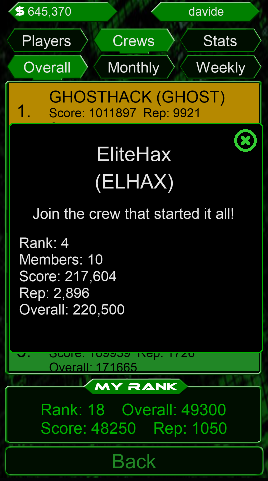For the statistics lovers, the Stats Leaderboard shows the Top3 of different categories:
- Highest Attack Number
- Highest Attack Won %
- Highest Defense Number
- Highest Defense Won %
- Best Attack Ever
- Highest Upgrade Number
- Highest Money Spent on Upgrades
- Highest XP
- Highest Tournament Win - Players
- Highest Tournament Win - Crews
Items
In the Items screen you can buy and use some Items. You can buy Items using Cryptocoins.
You can earn up to 20 Cryptocoins every hour by watching video ads. Every video watched and every click on a video is worth 10 Cryptocoins.

To watch a video and earn Cryptocoins just tap on the "Watch Videos" button. You will receive 10 Cryptocoins to watch the entire video.
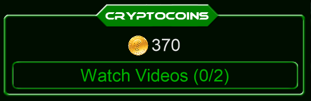With Cryptocoins you can buy different items. Currently the following items are available:
- Small Packs: you can find a small amount of money, upgrades for your arsenal or overclocks;
- Medium Packs: you can find a medium amount of money, cryptocoins, upgrades for your arsenal or overclocks;
- Large Packs: you can find a large amount of money, cryptocoins, upgrades for your arsenal, overclocks or a special item.
- Small Money Packs: you can find a small amount of money;
- Medium Money Packs: you can find a medium amount of money;
- Large Money Packs: you can find a large amount of money.
- Small Overclock Packs: you can find a small amount of overclocks;
- Medium Overclock Packs: you can find a medium amount of overclocks;
- Large Overclock Packs: you can find a large amount of overclocks.

Use the sliders to select the amount of items to Buy or Open and tap on the appropriate button.
When you open Packs, a popup will show you the rewards:

More items will be added in future updates.
Messages
From the Messages screen you can chat privately with other players. In order to privately chat with another player, you need to send him/her a request and he/she must accept the request.
From the Messages tab you can see the last messages sent or received, with the unread messages highlighted in dark green.
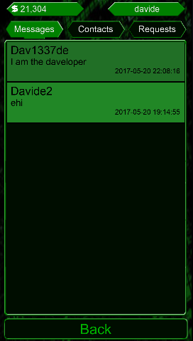To open a private chat with a player, tap on the corresponding row.
Note that the messages are stored in clear text and EliteHax can read them in case of abuses.
From the Contacts tab you have the list of the approved contacts. You can remove them if you don't want to receive any other message from them, or you can start a private chat by clicking on the Message icon.

From the Requests tab you can send a contact request to other players and you can see the requests received from other players.
You can either accept or refuse a contact request.

Tournaments
Tournaments let you compete with other players in different ways and earn important rewards!
From the Info tab you can see if a tournament is active or not, the tournament type and the rewards.
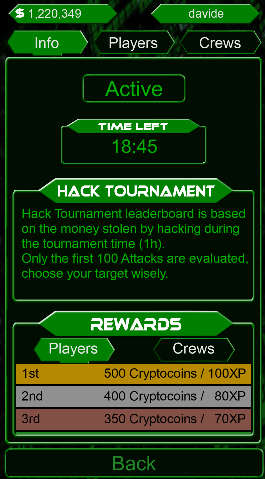Currently, there are two tournament types:
- Hack Tournament: based on the money stolen by hacking during the tournament time (1h). Only the first 100 Attacks are evaluated, choose your target wisely.
- Hack&Defend Tournament leaderboard is based on the difference between money stolen and money lost by hacking during the tournament time (1h). Only the first 100 Attacks are evaluated, choose your target wisely!
- Score Tournament: based on the score gained during the tournament time (4h). You can use overclocks to complete more upgrades and you can also open your packs!
Please NOTE: The rewards shown in the Info tab are based on a minimum of 200 players and 50 crews. If the minimum number is not reached, the rewards will be adjusted automatically.
From the Players and Crews tab you can see your rank and the top 100 for the last tournament.
 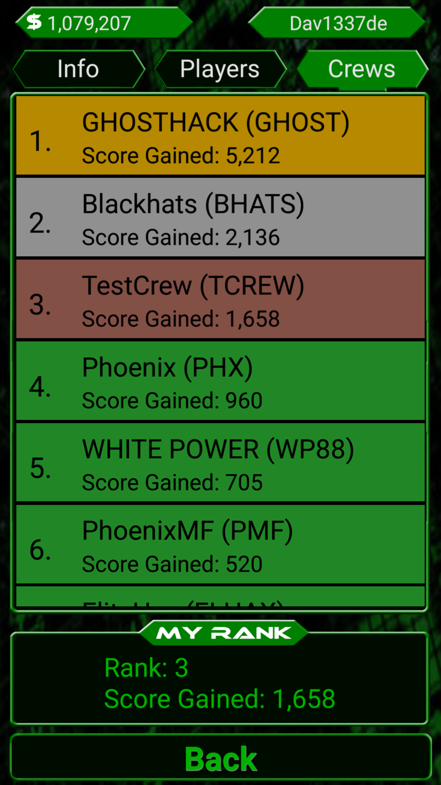
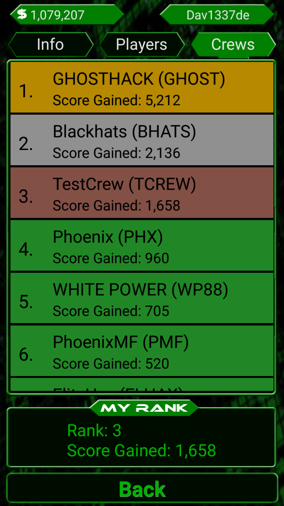
You can tap on a player or crew name to view its details.
Daily Rewards
EliteHax will give a daily gift to reward active players. The reward is based on the number of consecutive days played.

Rewards are based on the number of consecutive days played:
- 1-7 days: Small Pack, Small Money Pack, Small Overclock Pack;
- 8-14 days: Small Pack, Small Money Pack, Small Overclock Pack, Medium Pack, Medium Money Pack, Medium Overclock Pack;
- 15-21 days: Small Pack, Small Money Pack, Small Overclock Pack, Medium Pack, Medium Money Pack, Medium Overclock Pack, Large Pack, Large Money Pack, Large Overclock Pack;
- 22-30 days: Medium Pack, Medium Money Pack, Medium Overclock Pack, Large Pack, Large Money Pack, Large Overclock Pack;
- 30+ days: Medium Pack, Medium Money Pack, Medium Overclock Pack, Large Pack, Large Money Pack, Large Overclock Pack, IP Change, Skill Tree Reset.
Achievements
In the Achievements screen you have some special goals to reach in order to get an XP reward.
You can sort your achievements by Level and Completion.

The currently available achievements are based on:
- Core Hardware Upgrades (Internet, CPU, RAM, C&C, Encrypted Disk, Cooling System): 20 XP;
- Other Upgrades (Firewall, GPU, Exploit Framework, Malware Framework, Antivirus, IPS, SIEM, Anonymizer, Web Server, Application Server, Database Server, Scanner): 20 XP;
- Attacks Won: 20 XP;
- Consecutive Logins: 20 XP;
- Missions Collected: 20 XP;
- Loyalty: 50 XP;
- Videos: 50 XP;
Badges
In addition to Achievements, there are special goals that allows you to win a Badge that is visible by other players.
The currently available badges are:
- Loyal: Play for 3 Months (Bronze), 6 Months (Silver) and 1 Year (Gold);
- Addicted: Play for 30 (Bronze), 60 (Silver) and 100 (Gold) consecutive days;
- Attacker: Win a total of 10k (Bronze), 25k (Silver) and 50k (Gold) attacks;
- Tournament Legend: Win a total of 25 (Bronze), 50 (Silver) and 100 (Gold) tournaments;
- Mission Collector: Collect a total of 100 (Bronze), 500 (Silver) and 1000 (Gold) mission rewards;
- Beta: a special badge for players that helped during the public beta (March-August 2017) for 1 Month (Bronze), 3 Months (Silver) and 5 Months (Gold).
- Supporter: IAP Badge to show your support to EliteHax development and obtain some cosmetic benefits.
Supporter
Supporter IAPs are a way to support EliteHax development with 3 different types of Supporter levels.
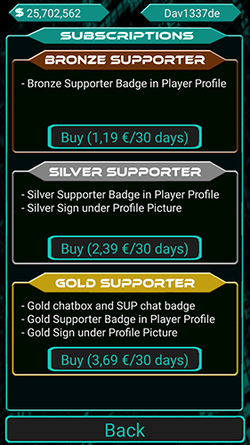The Supporter levels give the following benefits:
- Bronze: Bronze Supporter Badge in Player Profile;
- Silver: Silver Supporter Badge in Player Profile, Silver Sign under Profile Picture;
- Gold: Gold chatbox and SUP chat badge, Gold Supporter Badge in Player Profile, Gold Sign under Profile Picture;
Example of Gold Sign under Profile Picture:

Example of Gold chatbox and SUP chat badge: